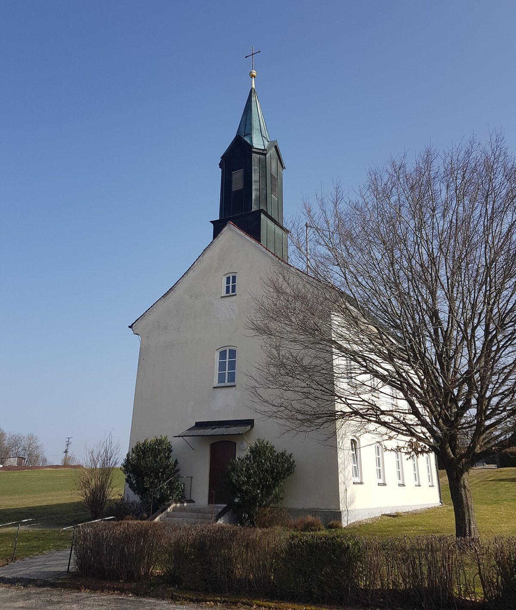

독일 부르글렝겐펠트 시 공기업·시민에너지협동조합, 1MW 태양광단지 착공…조합 70%·시 공기업 15%·땅 주인 15%

시 공기업이 지상 태양광 사업회사에 지분을 넣는 것은 처음…1단계 투자 약 55만 유로, 계획 중인 지자체 풍력단지도 함께하기로
독일 바이에른주 슈반도르프군 부르글렝겐펠트(Burglengenfeld)의 시 공기업 슈타트베르케(Stadtwerke Burglengenfeld)와 시민에너지협동조합 뷔르거에너지 미틀레레 오버팔츠(BEMO)가 란첸리트(Lanzenried) 인근에서 '히르슈베르크 태양광단지(Solarpark Hirschberg)' 착공식을 열었다. 사업회사 지분은 BEMO가 70%를 갖고 슈타트베르케와 땅 주인이 15%씩 나눠 가지며, 슈타트베르케가 지상 태양광 발전 사업회사에 지분으로 참여하는 것은 이번이 처음이다. 1단계는 약 8,557㎡ 부지에 출력 약 1MW로 계획됐고, 현재 계획 기준 총투자비는 약 55만 유로, 이 가운데 슈타트베르케가 낼 자기자본은 약 8만2,500유로로 예상된다. 부지는 이미 확정된 지구단위계획 '특별지구 히르슈베르크 태양광단지' 안에 있다. 슈타트베르케는 2025년 5월 BEMO 조합원으로 가입했으며, 두 기관은 시가 계획 중인 지자체 풍력단지에서도 손을 잡기로 했다. 마르틴 안트레터(Martin Antretter) 시장은 시 공기업이 처음으로 재생에너지 생산에 직접 뛰어든 것을 "중요한 한 걸음"이라고 평가했고, 요하네스 오르트너(Johannes Ortner) 슈타트베르케 대표는 앞으로의 투자를 전력망 접속 여력 같은 실제 여건에 맞추겠다고 밝혔다.
시민에너지 관점
시민 협동조합이 70%를 갖고 시 공기업과 땅 주인이 15%씩 나눈 구조는 발전소의 주인이 외부 개발사가 아니라 그 지역에 사는 이들이라는 점을 분명히 보여 준다. 시 공기업이 직접 하면 될 일을 왜 협동조합에 대주주 자리를 내주느냐는 물음이 나올 수 있지만, 시는 15% 지분과 조합원 자격으로 신뢰를 보태고 시민 출자가 사업의 중심을 맡으면서 공공과 시민이 위험과 이익을 함께 나누게 된다. 땅 주인까지 지분으로 묶는 방식은 부지 임대료를 둘러싼 갈등을 줄이고 수익이 지역 안에서 돌게 하는 장치이기도 하다. 국내 지자체도 지방 공기업과 공공부지를 시민 협동조합과 묶는 공동 소유 사업을 태양광에서 시작해 풍력까지 넓혀야 한다.
출처: OberpfalzECHO 2026-10-23 편집부(redaktion) 원문 보기
ドイツ・ブルクレンゲンフェルト市の公営企業と市民エネルギー協同組合、1MWの太陽光発電所を着工…組合70%・市公営企業15%・地権者15%
市公営企業が野立て太陽光の事業会社に出資するのは初めて…第1期投資は約55万ユーロ、計画中の自治体風力発電所でも連携へ
ドイツ・バイエルン州シュヴァンドルフ郡ブルクレンゲンフェルト（Burglengenfeld）の市公営企業シュタットヴェルケ（Stadtwerke Burglengenfeld）と市民エネルギー協同組合ビュルガーエネルギー・ミットレレ・オーバープファルツ（BEMO）が、ランツェンリート（Lanzenried）近郊で「ヒルシュベルク太陽光発電所（Solarpark Hirschberg）」の着工式を行った。事業会社の持ち分はBEMOが70%、シュタットヴェルケと地権者がそれぞれ15%で、シュタットヴェルケが野立て太陽光発電の事業会社に出資するのは今回が初めてとなる。第1期は約8,557㎡の敷地に出力約1MWの計画で、現時点の計画では総投資額は約55万ユーロ、このうちシュタットヴェルケの自己資本分は約8万2,500ユーロの見込みだ。敷地はすでに確定した地区詳細計画「ヒルシュベルク太陽光発電所特別地区」の中にある。シュタットヴェルケは2025年5月にBEMOの組合員となっており、両者は市が計画している自治体風力発電所でも協力することにした。マルティン・アントレッター（Martin Antretter）市長は、市公営企業が初めて再生可能エネルギーの発電に直接参加することを「重要な一歩」と評価し、ヨハネス・オルトナー（Johannes Ortner）シュタットヴェルケ代表は、今後の投資を送電網への接続余力など実際の条件に合わせて進めると述べた。
市民エネルギーの視点
市民協同組合が70%を持ち、市公営企業と地権者が15%ずつを分け合う構造は、発電所の持ち主が外部の開発事業者ではなく、その地域に暮らす人々であることをはっきり示している。市公営企業が自ら手がければよいのに、なぜ協同組合に筆頭株主の座を譲るのかという疑問もありうるが、市は15%の持ち分と組合員の立場で信頼を加え、市民の出資が事業の中心を担うことで、公共と市民がリスクと利益を分かち合うことになる。地権者まで持ち分で結び付ける方式は、用地の賃料をめぐる対立を減らし、収益を地域の中で循環させる仕組みでもある。韓国の自治体も、地方公営企業や公有地を市民協同組合と結び付ける共同所有事業を太陽光から始め、風力まで広げるべきだ。
出典: OberpfalzECHO 2026-10-23 編集部（redaktion） 原文を読む
德国布尔格伦根费尔德市公营企业与市民能源合作社开工建设1MW光伏电站…合作社70%、市公营企业15%、土地所有者15%
市公营企业首次入股地面光伏项目公司…一期投资约55万欧元，双方还将合作推进规划中的市属风电场
德国巴伐利亚州施万多夫县布尔格伦根费尔德（Burglengenfeld）的市公营企业Stadtwerke Burglengenfeld与市民能源合作社Bürgerenergie Mittlere Oberpfalz（BEMO）在兰岑里德（Lanzenried）附近为Hirschberg光伏电站（Solarpark Hirschberg）举行了开工仪式。项目公司的股份由BEMO持有70%，市公营企业与土地所有者各持15%，这是该市公营企业首次以股东身份参与地面光伏发电项目公司。一期规划在约8,557平方米的场地上建设约1MW的电站，按目前计划总投资约55万欧元，其中市公营企业需投入的自有资金预计约8万2,500欧元。场地位于已生效的详细规划“Hirschberg光伏电站特别区”范围内。市公营企业已于2025年5月加入BEMO成为社员，双方还决定在市里规划中的市属风电场项目上继续合作。市长Martin Antretter称，市公营企业首次直接参与可再生能源生产是“重要的一步”；市公营企业负责人Johannes Ortner表示，今后的投资将根据电网接入容量等实际条件来安排。
市民能源视角
市民合作社持股70%、市公营企业和土地所有者各持15%，这一结构清楚地表明，电站的主人不是外来开发商，而是生活在当地的人们。有人可能会问，市公营企业自己做就行，为何要把大股东位置让给合作社；但市政府以15%的股份和社员身份增添信任，市民出资则成为项目的核心，公共部门与市民由此共担风险、共享收益。把土地所有者也纳入股东的做法，还能减少围绕场地租金的矛盾，让收益在本地循环。韩国的地方政府也应把地方公营企业和公共用地与市民合作社结合起来，从光伏开始推进共同所有项目，并扩展到风电。
来源: OberpfalzECHO 2026-10-23 编辑部（redaktion） 查看原文
Burglengenfeld's municipal utility and a citizen energy cooperative break ground on a 1MW solar park, with the co-op holding 70%, the utility 15% and the landowner 15%
First time the utility has taken a stake in a ground-mounted solar company; phase one costs about 550,000 euros, and the partners will also team up on a planned municipal wind farm
The municipal utility of Burglengenfeld in the Schwandorf district of Bavaria, Germany, Stadtwerke Burglengenfeld, and the citizen energy cooperative Bürgerenergie Mittlere Oberpfalz (BEMO) have held a groundbreaking ceremony for the Hirschberg solar park (Solarpark Hirschberg) near Lanzenried. BEMO holds 70% of the project company, while the utility and the landowner hold 15% each, marking the first time the utility has taken an equity stake in a company building a ground-mounted solar plant. Phase one is planned at about 1MW on a site of about 8,557 square metres, with total investment currently put at about 550,000 euros, of which the utility's equity share is expected to be about 82,500 euros. The site lies within a legally binding development plan designating a special area for the Hirschberg solar park. The utility joined BEMO as a member in May 2025, and the two have agreed to work together on a municipal wind farm the town is planning as well. Mayor Martin Antretter called the utility's first direct move into renewable generation "an important step", while utility head Johannes Ortner said future investment would be matched to real-world conditions such as available grid connection capacity.
Citizen Energy View
A structure in which a citizens' cooperative owns 70% and the municipal utility and the landowner share the rest equally makes clear that the owners of the plant are not an outside developer but people who live in the area. Some may ask why a public utility would hand majority ownership to a cooperative instead of doing the job itself, but the town adds credibility through its 15% stake and its membership, while citizen investment carries the project, so the public sector and citizens share both risk and reward. Bringing the landowner in as a shareholder also eases disputes over land rent and keeps the returns circulating locally. Korean local governments should likewise pair their public corporations and public land with citizen cooperatives in jointly owned projects, starting with solar and extending to wind.
Source: OberpfalzECHO 2026-10-23 Editorial staff (redaktion) Read the original